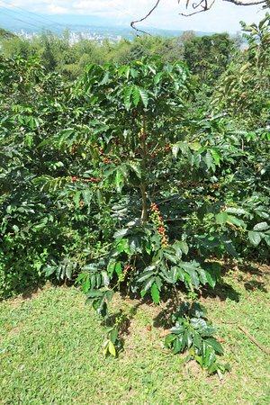
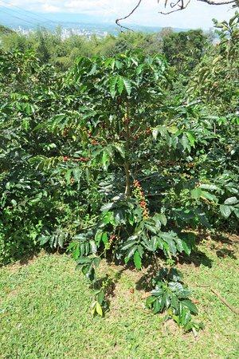

La Miranda
La historia de la finca La Miranda comenzó en el año 2009, cuando adquirimos este hermoso terreno de 4 hectáreas con una visión clara en mente: convertirlo en un lugar próspero y productivo, donde pudiéramos cultivar diversos productos agrícolas y contribuir al desarrollo de nuestra comunidad.
En los primeros años, nos enfocamos en diversificar nuestra producción, cultivando una amplia gama de productos agrícolas. Cultivamos mora, tomate de árbol, granadilla, yuca, arveja y pimentón. Estos cultivos nos brindaron una valiosa experiencia y nos permitieron explorar diferentes mercados y canales de distribución.
A medida que avanzaba el tiempo, nos dimos cuenta de que el aguacate Hass tenía un potencial significativo en el mercado nacional e internacional. Su demanda estaba en constante crecimiento y su rentabilidad era muy atractiva. Por lo tanto, decidimos concentrar nuestros esfuerzos en su producción y aprovechar al máximo las condiciones favorables que nuestra finca ofrecía para su cultivo.
Otros Cultivos
 

Decidimos mantener algunos cultivos complementarios para diversificar nuestros ingresos y asegurar un equilibrio económico en la finca. Actualmente, además del aguacate Hass, cultivamos frijol, banano y café. Estos cultivos nos permiten satisfacer las demandas del mercado local y aprovechar las ventajas competitivas de nuestra finca.